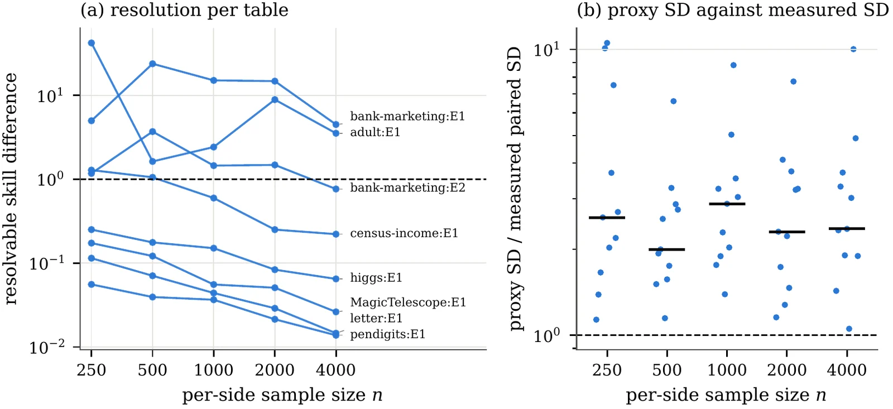

How Many Samples Does a Generative Evaluation Need?
Intrinsic dimension and the design of distributional comparisons: prospective sample-size design and floor-corrected reporting for Wasserstein evaluations of generative models.

Overview
Generative models are routinely compared through the distance between a real and a synthetic sample, yet the sample size needed to resolve a difference of interest is rarely determined. This work develops a framework for designing such evaluations before data are collected, the way a power analysis designs an experiment.
Its central object is the resolution floor: the plug-in 2-Wasserstein distance between two disjoint real samples of equal size. It is strictly positive and decays at a rate set by the intrinsic dimension of the data, so inverting the fitted decay gives a prospective sample-size rule. Because that rule is valid only where a single power law describes the decay, the method reports the size, power and severity of a test for exactly that condition, and withholds a prescription otherwise.
The floor also yields a floor-corrected skill score, a two-sided test that exposes memorisation, a minimum detectable difference at stated error rates and an equivalence test. For latent-generative Wasserstein certificates, it determines the dimension above which no certificate of the standard form can be informative.
What I built
certgen, a Python library (NumPy and SciPy only) with a command-line interface:design,resolve,evaluate,limit.- One experiment script per measurement, each writing a JSON artifact; every number in the manuscript is computed from those artifacts.
- Lean 4 proofs of the formal statements, plus a Mathlib bridge that instantiates them over the reals (Birkhoff–von Neumann reduction of the transport problem).
- A test suite that checks the library, the manuscript's numbers, its references against two bibliographic indexes, its figures and the Lean build records.
Figures
Run it
$ pip install -e . $ certgen design real.csv --target 0.05 --severity $ certgen evaluate real.csv generated.csv $ certgen limit 4096 --dhat 12.3
Cite
@misc{kahyaoglu2026certgen,
author = {Kahyao{\u{g}}lu, {\"O}mer},
title = {How Many Samples Does a Generative Evaluation Need? Intrinsic Dimension and the Design of Distributional Comparisons},
year = {2026},
note = {Preprint, in preparation},
url = {https://github.com/kahyaoglu20/certgen}
}